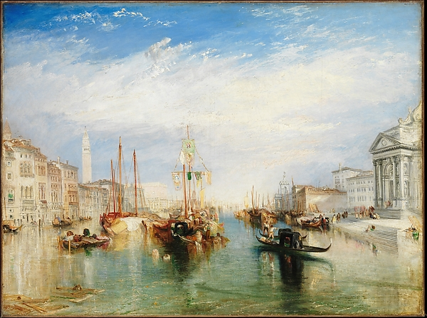
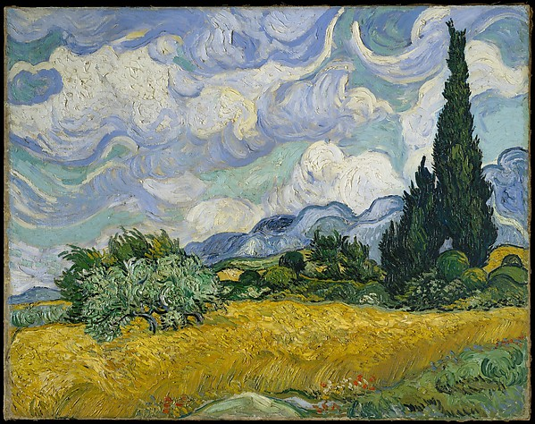
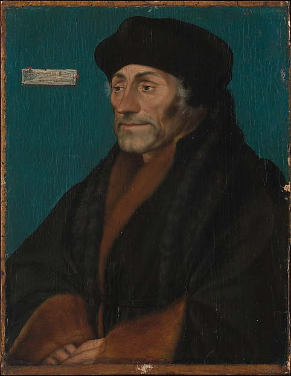
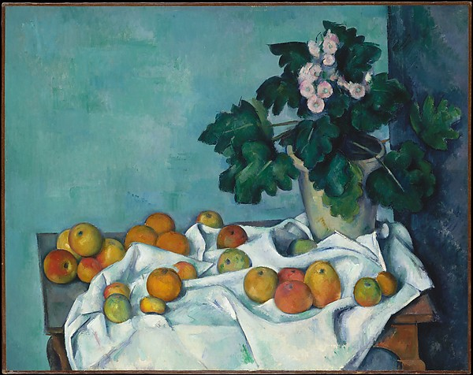

Search
Cart (2)
Search
Search our collection of more than 400,000 artworks.

Joseph Mallord William Turner
Venice, from the Porch of Madonna della Salute
,
ca. 1835
Pieter Bruegel the Elder
The Harvesters
,
1565

Vincent van Gogh
Wheat Field with Cypresses
,
1889
Albrecht Dürer
Melencolia I
,
1514
Ferdinand Hodler
The Dream of the Shepherd (Der Traum des Hirten)
,
1896

Hans Holbein the Younger
Erasmus of Rotterdam
,
ca. 1532

Paul Cézanne
Still Life with Apples and a Pot of Primroses
,
ca. 1890
Thomas Eakins
[Thomas Eakins and John Laurie Wallace on a Beach]
,
ca. 1883
Hans Memling
The Annunciation
,
1480–89
Katsushika Hokusai
Under the Wave off Kanagawa (Kanagawa oki nami ura), or The Great Wave, from the series Thirty-six Views of Mount Fuji (Fugaku sanjūrokkei)
,
ca. 1830–32
Hans Memling
Portrait of a Young Man
,
ca. 1472–75


![[Thomas Eakins and John Laurie Wallace on a Beach]](met-objects/DP228730.jpg)